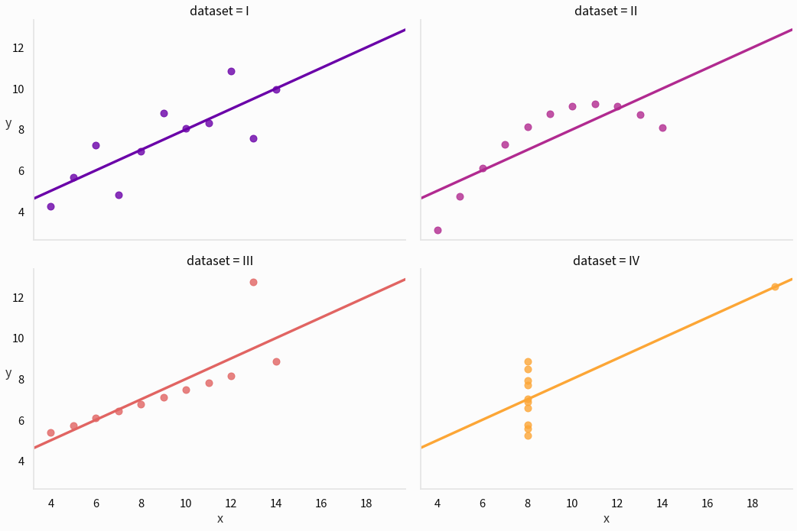

Effective Data Visualization, Part 1: What Is Effective Data Visualization?
This series is the textual version of a presentation I gave to a class on effective data visualization. I’m reproducing it here both to add some information that was cut from the presentation for time and to put it in a publicly available place.
Intro
What This Guide Is For
This series of posts is about how to make effective data visualization: exactly what I mean by that will become clear shortly. Much like one might critique writing in a creative writing class, I’ll focus on how to improve existing visualizations. This should hopefully also help the reader become a better consumer of data visualization they encounter in their daily lives.
Who This Guide Is For
This guide is for anyone! Unlike my other work on this blog, this guide expects no knowledge of coding or any platform for visualizations: learning such a tool is necessary to implement these ideas, but not necessary for this guide at all. My hope is that this is generally useful for people in business, data science, journalism, programming, and statistics: anyone who works with or cares about data.
Without further ado, let’s get started!
What is Effective Data Visualization?
What do I mean by effective data visualization? Here, an effective data visualization is one that effectively helps the viewer process information. I care here about dataviz as a tool that increases our brains’ ability to work with data.
This is contrasted with purely aesthetic concerns. Some visuals that don’t look spiffy are nonetheless useful tools, and some visuals that are aesthetically unappealing are useful processing aids.
Data can be deadly serious, and so data visualization can have tremendous importance.
The Challenger disaster in which Christa McAuliffe, the person in the photo above, died is a grim reminder of information’s power. The O-ring failure that led to the explosion was preventable and understood. Thus, some authors like Edward Tufte have analyzed this tragedy as a failure of data visualization as much as anything else: the visualizations used to communicate the dire need to reschedule the launch failed to convey this knowledge to the people who made that fateful decision. This is to say that effectively communicating and understanding data is worthy of serious study.
Why use data visualization at all? Why not use other tools, like spreadsheets or statistics?
Why is Effective Data Visualization?
There’s a persistent myth that graphs are inherently less meaningful or useful than raw statistics. Statistics are very important, and I would certainly not advocate for replacing the statistics underlying, say, clinical trials with a bunch of graphs.
The classic example of why we might use data visualization in addition to statistics comes to use from Frank Anscombe in the form of 4 different datasets like this one:
| x | y |
|---|---|
| 10.0 | 8.04 |
| 8.0 | 6.95 |
| 13.0 | 7.58 |
| 9.0 | 8.81 |
| 11.0 | 8.33 |
| 14.0 | 9.96 |
| 6.0 | 7.24 |
| 4.0 | 4.26 |
| 12.0 | 10.84 |
| 7.0 | 4.82 |
| 5.0 | 5.68 |
Imagine you’re trying to find out if y is related to x and figure out the nature of that relationship. It’s rather difficult to parse this information, especially given that this is just one-fourth of the total. Let’s try using some exploratory statistics to get a better sense of the data: the mean of each variable, the standard deviation of each variable, the regression line, the Pearson correlation, and the \(R^2\) value.
| \(\mu_x\) | \(\mu_y\) | \(\sigma_x\) | \(\sigma_y\) | \(r\) | Regression line | \(R^2\) | |
|---|---|---|---|---|---|---|---|
| Dataset | |||||||
| I | 9.0 | 7.501 | 3.317 | 2.032 | 0.816 | 0.500x + 3.000 | 0.667 |
| II | 9.0 | 7.501 | 3.317 | 2.032 | 0.816 | 0.500x + 3.000 | 0.666 |
| III | 9.0 | 7.500 | 3.317 | 2.030 | 0.816 | 0.500x + 3.000 | 0.666 |
| IV | 9.0 | 7.501 | 3.317 | 2.031 | 0.817 | 0.500x + 3.000 | 0.667 |
The standard statistics we might use when we don’t know what we’re looking for yet aren’t distinguishing these datasets at all. Let’s see what a plot looks like:

Sometimes a picture really is worth a thousand correlation values:
- The first dataset seems like a fairly standard linear correlation with some noise: linear regression seems like a good fit.
- The second dataset has a very regular relationship, but it’s not linear! Modeling this with a quadratic would work well.
- The third dataset has a very regular relationship with one crazy outlier.
- The fourth dataset is barely a dataset! Something has gone terribly wrong and a single influential outlier is preventing us from seeing that in statistics.
There is no tool that is more effective at quickly sussing out these patterns than a visualization like this one.
That’s all for today. Next time I’ll talk about visual complexity and visual overload, and I’ll do my part to combat some pernicious misconceptions about how sophisticated data visualization should be. See you then!
The Basics of Cryptography, Part 3: Cryptographic Hashes
This is the third post in a series: for part 1, go here, and for part 2, go here.
We’ve previously discussed cryptography, in the modern world, as a way of sending secure messages through insecure channels. But this is not the only thing you might want to do in a world with malicious actors trying to thwart you. RSA and Diffie-Hellman exchange aren’t vulnerable to simple eavesdroppers. However, there are other types of attacks that they don’t protect against, and we might want to insulate ourselves against those attacks as well. One of them is a man-in-the-middle attack—in essence, someone manipulating messages. As we’ve often done, let’s imagine a scenario, the one I ended the last post with:
Alice and Bob are organizing anti-government activism in a country that represses political freedoms. Alice wants to tell Bob to meet her in a certain place, but they can only communicate over the Internet: Bob worries that Malcolm, the government employee that controls their Internet provider, will forge a message from Alice and set him up. How can Bob verify that Alice’s messages haven’t been modified?
The Basics of Cryptography, Part 2: Intro To RSA
This is part 2 of a series: to see the first post, go here. If you’re not familiar with things like modular arithmetic, read that before reading this.
Today we’re going to continue to look behind the curtain at the algorithms that power the Internet we know and love. In this post, I’ll cover the RSA cryptosystem: what it is, what it does, how it works, etc. RSA is such a useful algorithm because it sidesteps a lot of the problems with sending secure messages we talked about last time. You can think of it as a clever way of improving on the encryption model we used last time, not by simply improving it as it exists, but by completely sidestepping the security problems it had.
This post will introduce a pristine version of RSA, without the real-world complications, and apply it to the same problem we looked at last time: securely sending a message to someone else over an insecure channel, without prior communication. In the future, I’ll look at how this textbook RSA fails in the real world, and additionally how you can use the idea behind RSA to do things besides sending secure messages.
Problem Solving Techniques: Induction
This is the second in my series on problem-solving techniques: for the first, see this post on invariants.
As I’ve previously discussed, I’m fascinated by the ability to create proofs or solutions for problems that are easy to understand but difficult to synthesize. In this series, I’m trying to shed some limited insight on how we mere mortals can arrive at these beautiful and creative insights.
The Basics of Cryptography, Part 1: Diffie-Hellman Key Exchange
How can we send secure messages through insecure channels?
A quick note before we begin: this summarizes a talk I gave at my high school’s computer science club. It’s written to be accessible to anyone with a basic math background, though, and it doesn’t require any programming knowledge. This is the start of a series that will try to explain the basics of cryptography: given that all of us use cryptography every day, it’s important to have a basic understanding of how it works. It’s also pretty cool!
PACTF 2019 Writeup: How’d I Get Hacked?
As I mentioned in this post, I wrote several problems for PACTF 2019, a cybersecurity and programming competition held for high schoolers. I’ve been asked to do writeups for each of the problems I did, and so I’ll be trying to do that—at least, where I think there’s something interesting to talk about for the people reading this who didn’t compete and don’t care about the contest.
Today, we’ll be going over “How’d I Get Hacked?”, which gives me an opportunity to talk about one of my favorite niche programming topics: the utter insanity and brilliance of Unicode.
Problem-Solving Techniques: Invariants
There are a lot of clever proofs in mathematics and computer science. I’ve already talked about some of them, and I hope to do a lot more of it on this blog. There’s often a certain separation that I feel when I read something particularly creative or beautiful: this is amazing, but how could I ever hope to produce something like it? Is real aesthetic achievement in these fields limited to those with a natural talent I lack?
I’m still not sure about that last question, but I do know that, like anything, it is possible to improve at creative problem-solving through practice. The people I’ve known who have been best at doing creative math—the kind that makes perfect sense when you see it but seems impossible to find if you don’t already know it—have built up vast toolboxes of concepts and ideas that are useful in many different ways across mathematics and computer science. These aren’t solutions for a single problem: they’re meta-solutions that serve as an archetype for solutions to a diverse array of problems. In my experience, the size of that toolbox is what, more than anything else, determines how effectively one can find creative, novel ways of approaching problems. I’ll be talking about one such tool today: invariants.
PACTF 2019 Writeup: Denial of Service Attack
Last year, I led the team behind PACTF 2019, a CTF competition where people, mostly high schoolers, solved problems based on computers and computer security. It was a really fun and rewarding experience, and I think a lot of people hopefullly had fun solving the problems. If that sounds like something you might like, I’d recommend trying it out: make an account and see what you can do! I wrote about a dozen problems for this contest, and so you’ll see some overlapping themes with what I talk about on this blog.
Someone recently asked me to write up my explanation for one of the problems I wrote: “Denial of Service Attack”, one of the harder problems in the second week. You’re welcome to try the problem on the PACTF website in full before we begin. I will be spoiling the whole thing here: you’ve been warned! I’ll start with a brief overview, give some background, and go over the main trick.
A Whirlwind Tour of Statistical Tests
Hello again!
Let’s say you’ve been working on your dataviz skills, and you think you’ve found an interesting pattern or correlation in a dataset. How can you tell that whatever you’re seeing is significant? How can you distinguish between random variation and legitimate, meaningful results? As it happens, the mathematical branch of statistics is almost entirely devoted to questions like these. I think aspiring data scientists need not be full-fledged statisticians, but everyone should be familiar with the basic statistical tests, when to apply them, and how to interpret their results.
Today we’ll be sojourning through the land of statistical tests in Python, showing how they might be used and interpreted. The goal is not that you’ll be able to apply this all immediately when you need it; instead, the goal is that you can recognize when statistical tests might be useful and be able to find the ones you need. (In an age of the Internet, I find recognition to be much more important than memorizing everything: if you know what to Google, you can figure out how to code it, but you can’t Google something you can’t put into words or something you can’t recognize.)
A Painless Introduction to Python Data Analysis and Visualization
Data visualization and data science is a hot topic right now, and there’s lots of people I know who want to develop this skill set. A common hurdle, in my experience, is that a lot of tutorials are either incredibly specific (here’s how to change the y-axis title) or very abstract (this is what a violin plot is, good luck making one!) The goal of this tutorial is to make the kind of resource I would have really benefited from when I was starting out: an introduction that can give you the background you need to actually benefit from internal documentation and give you an idea of what’s possible so you aren’t reinventing the wheel (an extraordinarily common problem). This post is written for:
- People who aren’t completely new to computer programming, but not necessarily programmers or software developers
- You need to know basic Python syntax to follow along, but you don’t need to actually know much about Python
- Anyone who is tired of the limitations of programs like Tableau and wants to be able to make bespoke visualizations that meet their specific needs
- Those who are interested in using Python for statistics or machine learning who want some wider background before they start
- Students or presenters of any kind who want to make beautiful graphs without fighting Excel for an hour
If any of these describe you, you’ve come to the right place!